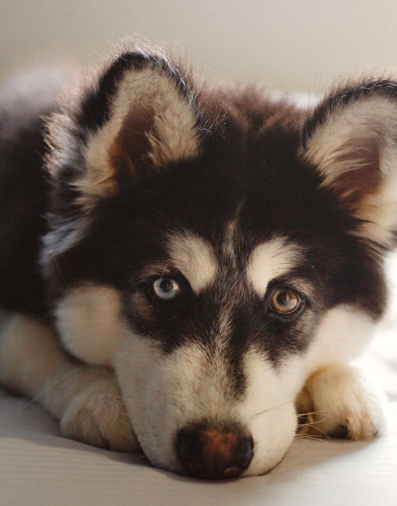
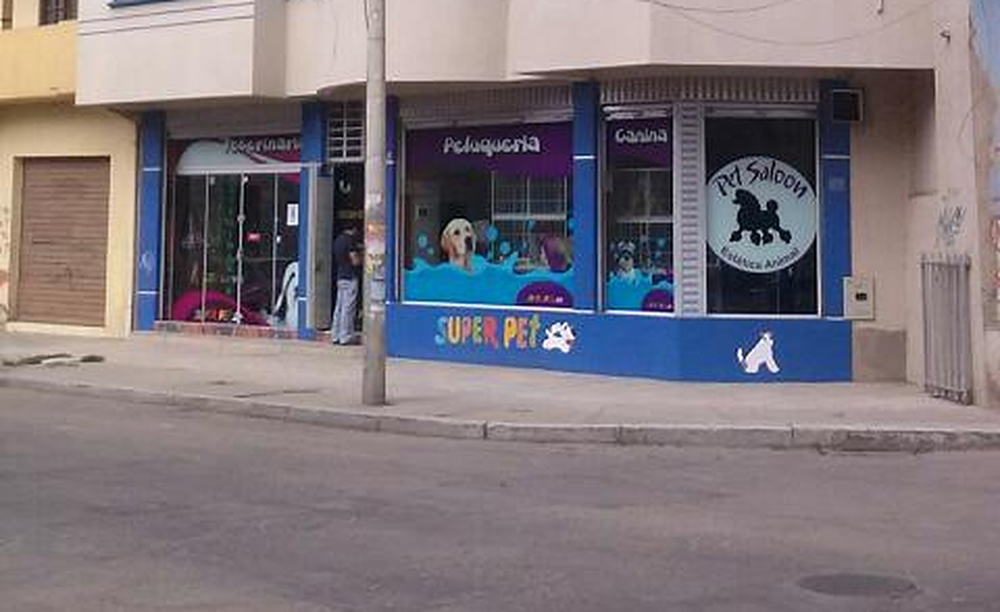
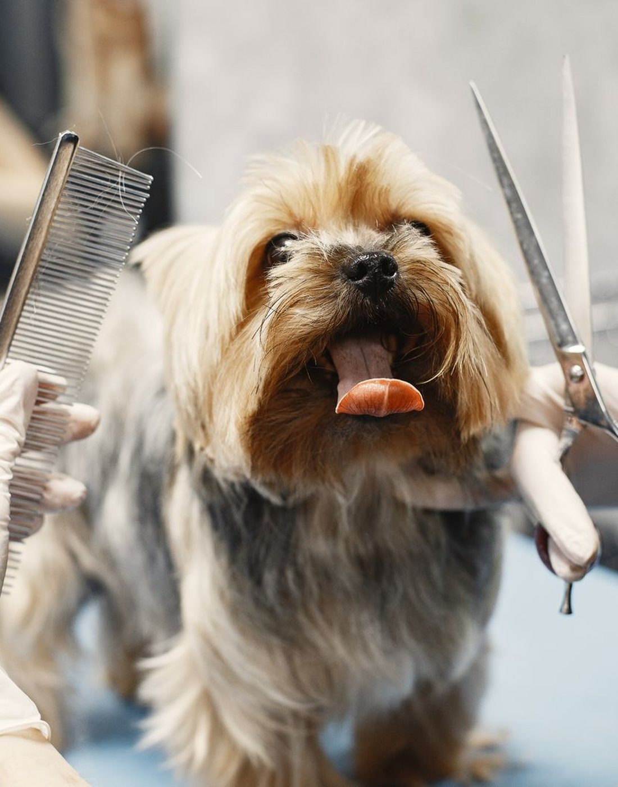

Consulta
Figura como hospital veterinario. Para una revisión, llama al 4522781 y pregunta el turno antes de llegar en el corte del mediodía.
Fotografía de ambiente. No es un paciente de la clínica.
Calle Ecuador · Cochabamba
Hospital veterinario en calle Ecuador, esquina Junín. En la fachada se lee veterinaria, peluquería canina y estética animal. Para un turno, llama antes de pasar.

Qué atienden
No publican una lista de precios. Esto es lo que el local muestra en la puerta y en sus avisos del mismo punto.

Figura como hospital veterinario. Para una revisión, llama al 4522781 y pregunta el turno antes de llegar en el corte del mediodía.
Fotografía de ambiente. No es un paciente de la clínica.
En avisos del mismo local hablan de cirugía, laboratorio clínico y ecografía. Lo que corresponda a tu mascota se confirma por teléfono.

Está pintada en la vidriera, junto a la estética animal. El corte y el baño se preguntan en el local: no hay una carta publicada.
Fotografía de ambiente. No es la peluquería del local.
Horario
El horario sale de la ficha de Google, con la hora de Cochabamba. Si llegas entre las 12:30 y las 14:30, entre semana la puerta está en el corte.
Dónde estamos
Cochabamba. El mapa abre el pin de la ficha. No hay un WhatsApp publicado en Google: el teléfono es el 4522781.